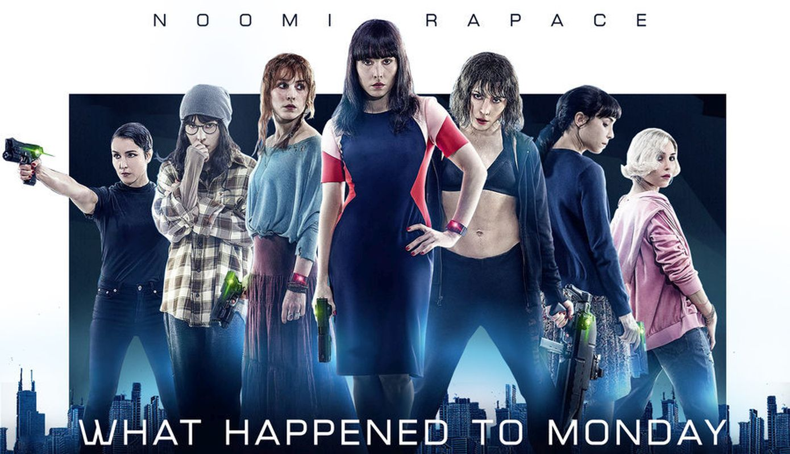
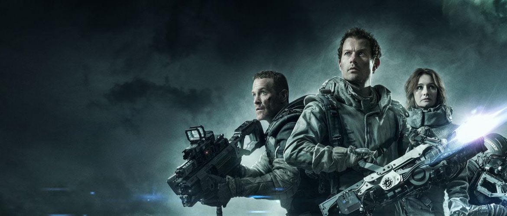

Peliculas de ciencia ficción
Okja
Mija es una joven coreana que convive con una extraña criatura de carácter amable y cálido llamada Okja. La chica y el curioso animal son amigos excepcionales y viven su día a día en las montañas cuidando el uno del otro, pero todo se complica cuando la poderosa empresa multinacional responsable de la existencia del animal quiere recuperarlo. Entonces ella hará todo lo posible para evitar que capturen a su inseparable compañero. Juntos vivirán aventuras, pero también se enfrentarán a complicadas situaciones que poco a poco tendrán que superar. .
Siete hermanas
En 50 años la poblacion se ha doblado, en una crisis de superpoblación la doctora Nicolette Cayman (Glenn Close) ha decretado una política de hijos únicos denominada Ley de Asignación Familiar. En medio de esta crisis de superpoblación, Terrence Settman (Willem Dafoe) tendrá que criar en secreto a sus siete nietas gemelas (Noomi Rapace). A cada una les pondrá un día de la semana para que puedan turnarse y salir de casa sin ser descubiertas. Cuando sean adultas Lunes desaparecerá misteriosamente y el resto de hermanas tendrán que arriesgarse más que nunca para poder encontrarla.
Spectral
Spectral está ambientada en Manhattan, donde un grupo de Operaciones Especiales se prepara para hacer frente y dar caza a unos fantasmas que están atacando la ciudad. Badge Dale forma parte de ese grupo, siendo el encargado de investigar situaciones fuera de lo común; y Mortimer es la responsable que la CIA envía para hacerse cargo de esos sucesos sobrenaturales.Spectral está ambientada en Manhattan, donde un grupo de Operaciones Especiales se prepara para hacer frente y dar caza a unos fantasmas que están atacando la ciudad. Badge Dale forma parte de ese grupo, siendo el encargado de investigar situaciones fuera de lo común; y Mortimer es la responsable que la CIA envía para hacerse cargo de esos sucesos sobrenaturales.Spectral está ambientada en Manhattan, donde un grupo de Operaciones Especiales se prepara para hacer frente y dar caza a unos fantasmas que están atacando la ciudad. Badge Dale forma parte de ese grupo, siendo el encargado de investigar situaciones fuera de lo común; y Mortimer es la responsable que la CIA envía para hacerse cargo de esos sucesos sobrenaturales.